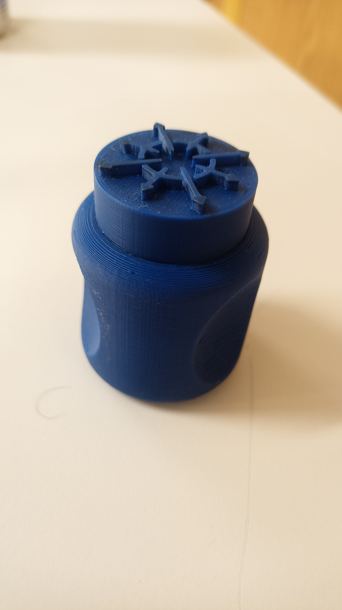
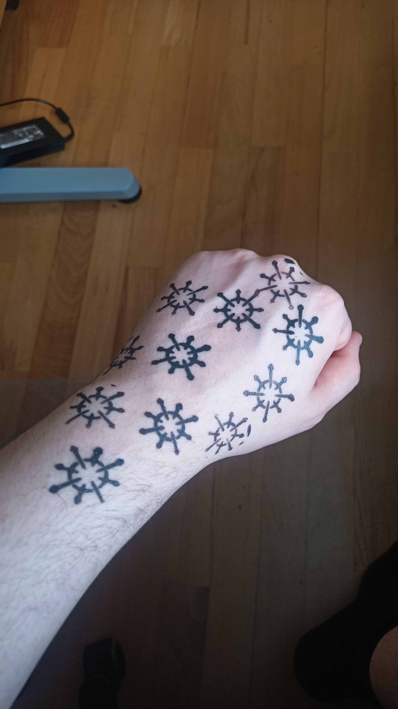

Project 3
A Stamp of Aproval

with the simple task of making something that can only be made via additive printing you whould think I am spoild for choice. But I had very few things that i wanted to do and all of the where over the 30 gram limit. While thinking this over I remembered the old way of marking letters with a stamp in wax. finding it a fairly easy idead first started to design a logo. after about 6 hours I trashed my sketches as the logo i had in mind was something I was never going to be able to design something that elaborate in Fusion. I then found a mark of old that was interesting yet fancy enough for a stamp. This design being the Mark of chaos. The Mark of Chaos was an old greek rune denoting the primordial Chaos, one of the first entitys to have emerged. the mark is simple and has been modernized over time to be more simple and minimalist. I found a template to work from and manualy recreated it in fusion. The stamp of Chaos was made and for easy griping (and to fulfill the additive restriction) with 3 indents and a way to center the stamp.
The Stamp came out quite nicely and solid. there are some misscasts where the plastic had torn or warped but the symbol came out cleanly but had tiny holes where the print does not fit perfectly. The diamiter of the injection does not alow for a filled in flat surface with this narrow a surface. Nothing some milliput and sanding cant fix.
 The samp was a success but when testing the ink it ran to much hiding the gapes in the art and the arrows where muddied. I will need to file down the coreners on the symbol and it will surely fix the defenition of the stamp.
- © copyright WIP
- Design: HTML5 UP